Scalars
The first rendering shape measured here: a layout, an included partial, a loop over scalars with a filter, and a nested loop inside it. A time here and a time further down are not the same measurement — compare engines WITHIN a page.
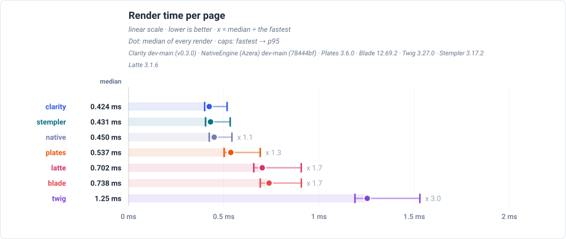
Dot: median render · caps: fastest observation and p95.
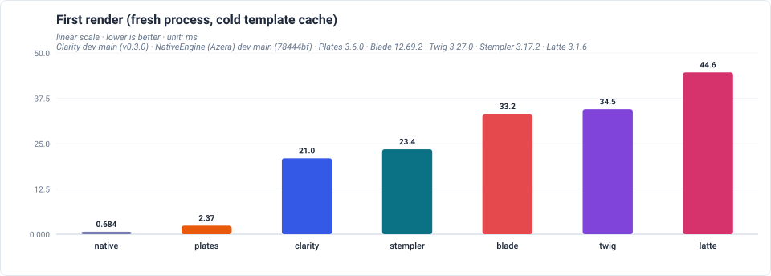
The one-off cost of the first request after a deploy: engine boot, template compile, cache write and one render. Measured once per engine, each in its own fresh process; OPcache is on but its CLI segment is per-process, so the engine source is compiled there too.
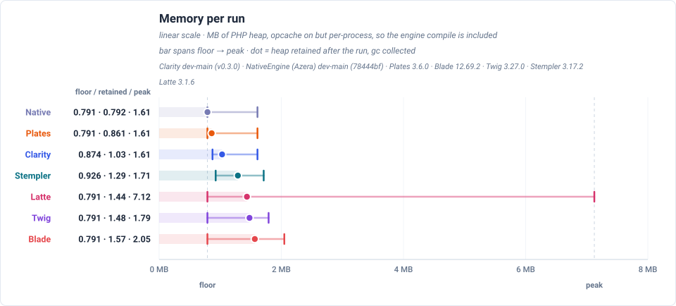
Reads the PHP heap. Left cap: what the engine costs to have loaded, nothing rendered. Dot: what a whole run still holds, after a gc pass — memory_get_usage(false) after a whole run of iterations_per_run renders in a fresh process, gc_collect_cycles() called first. Right cap: the run's high-water mark. Memory probe: a fresh process with opcache.enable_cli=1 but a per-process CLI segment, so engine source is compiled in that process.
Results
| Engine | First render (ms) | Mean (ms) | Median (ms) | Min (ms) | p95 (ms) | Retained (MB) | Peak (MB) |
|---|---|---|---|---|---|---|---|
| Clarity | 16.276 | 0.436 | 0.421 | 0.397 | 0.507 | 1.03 | 1.61 |
| Stempler | 23.179 | 0.443 | 0.427 | 0.398 | 0.518 | 1.29 | 1.71 |
| Native | 0.686 | 0.464 | 0.449 | 0.423 | 0.537 | 0.79 | 1.61 |
| Plates | 2.684 | 0.551 | 0.531 | 0.493 | 0.644 | 0.86 | 1.61 |
| Latte | 46.966 | 0.720 | 0.692 | 0.661 | 0.840 | 1.44 | 7.12 |
| Blade | 31.396 | 0.750 | 0.724 | 0.687 | 0.873 | 1.57 | 2.05 |
| Twig | 35.577 | 1.288 | 1.249 | 1.195 | 1.506 | 1.48 | 1.79 |
A cell here is the median of one engine's own renders in its own fresh process — not a shared high-water mark.
Mixed
Rendering the heavy page: 20 flat variables each read twice (as text and as a data-value attribute) plus 20 rows of six fields each, over 40 flat variable accesses per render and 1440 in total at 200 items, with every value HTML-special so the escape path does real work in both the body and an attribute context. A figure here and a figure above are different measurements — compare engines within a page, not across pages.
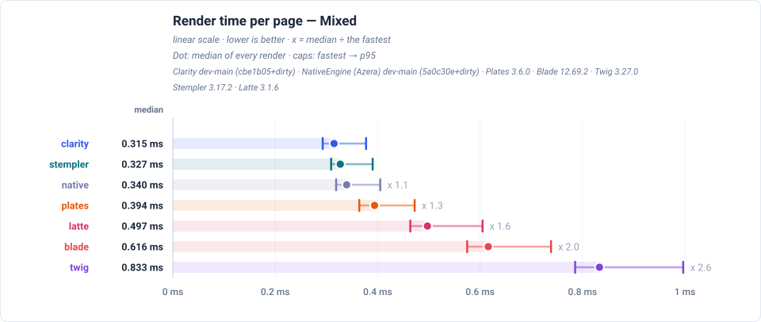
Dot: median render · caps: fastest observation and p95.
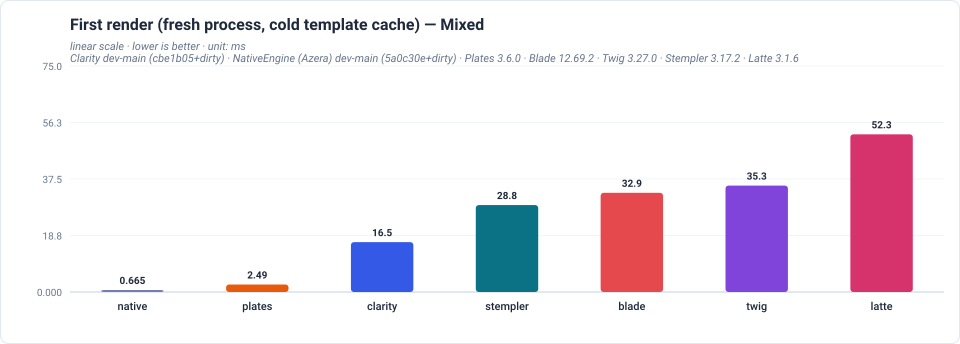
The one-off cost of the first request after a deploy: engine boot, template compile, cache write and one render. Measured once per engine, each in its own fresh process; OPcache is on but its CLI segment is per-process, so the engine source is compiled there too.
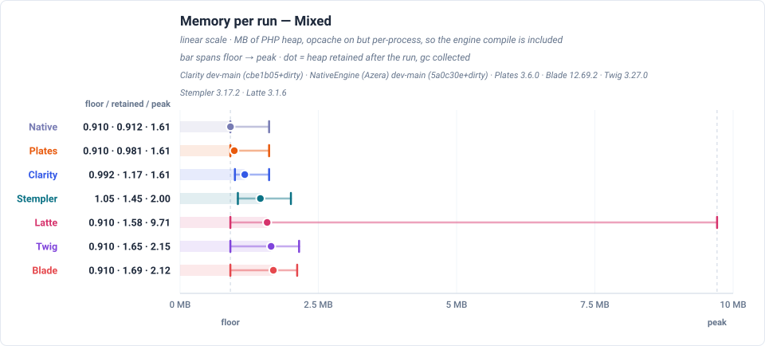
Reads the PHP heap. Left cap: what the engine costs to have loaded, nothing rendered. Dot: what a whole run still holds, after a gc pass — memory_get_usage(false) after a whole run of iterations_per_run renders in a fresh process, gc_collect_cycles() called first. Right cap: the run's high-water mark. Memory probe: a fresh process with opcache.enable_cli=1 but a per-process CLI segment, so engine source is compiled in that process.
Results
| Engine | First render (ms) | Mean (ms) | Median (ms) | Min (ms) | p95 (ms) | Retained (MB) | Peak (MB) |
|---|---|---|---|---|---|---|---|
| Clarity | 16.544 | 0.325 | 0.315 | 0.293 | 0.377 | 1.17 | 1.61 |
| Stempler | 28.845 | 0.338 | 0.327 | 0.309 | 0.390 | 1.45 | 2.00 |
| Native | 0.665 | 0.350 | 0.340 | 0.319 | 0.405 | 0.91 | 1.61 |
| Plates | 2.491 | 0.407 | 0.394 | 0.364 | 0.472 | 0.98 | 1.61 |
| Latte | 52.328 | 0.517 | 0.497 | 0.464 | 0.605 | 1.58 | 9.71 |
| Blade | 32.909 | 0.634 | 0.616 | 0.575 | 0.739 | 1.69 | 2.12 |
| Twig | 35.309 | 0.859 | 0.833 | 0.786 | 0.997 | 1.65 | 2.15 |
Objects
Rendering objects instead of scalars: two properties, a nested object, a nullable property behind a default, and an array inside an object. A figure here and a figure above are different measurements — compare engines within a page, not across pages.
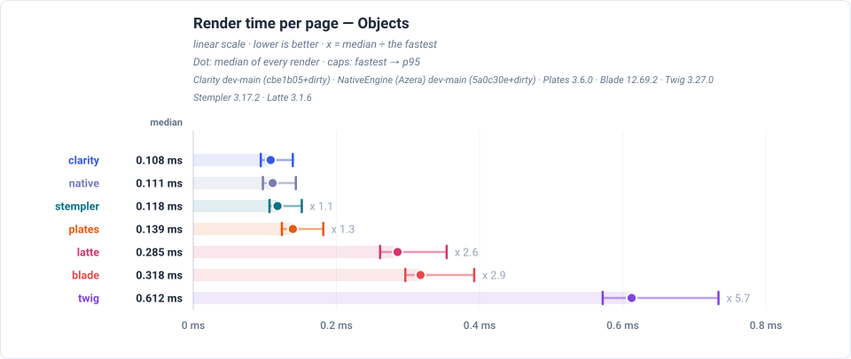
Dot: median render · caps: fastest observation and p95.
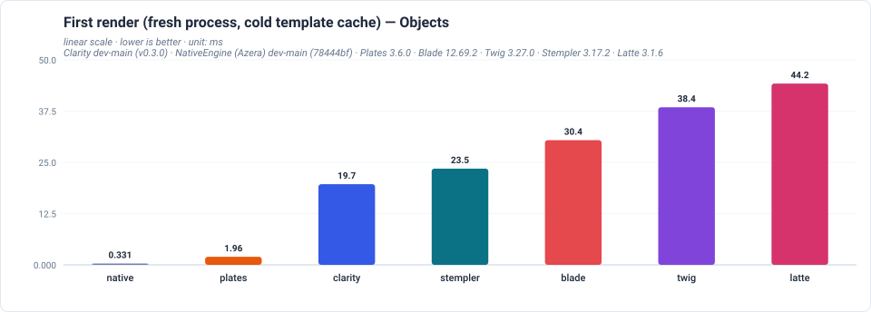
The one-off cost of the first request after a deploy: engine boot, template compile, cache write and one render. Measured once per engine, each in its own fresh process; OPcache is on but its CLI segment is per-process, so the engine source is compiled there too.
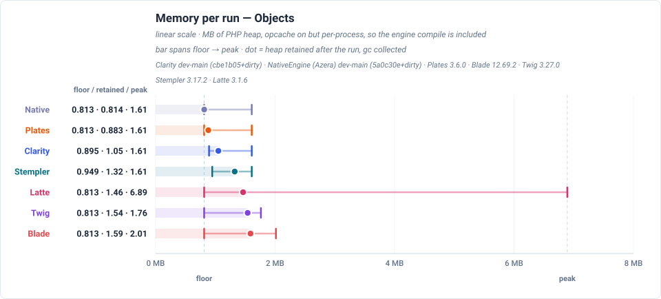
Reads the PHP heap. Left cap: what the engine costs to have loaded, nothing rendered. Dot: what a whole run still holds, after a gc pass — memory_get_usage(false) after a whole run of iterations_per_run renders in a fresh process, gc_collect_cycles() called first. Right cap: the run's high-water mark. Memory probe: a fresh process with opcache.enable_cli=1 but a per-process CLI segment, so engine source is compiled in that process.
Results
| Engine | First render (ms) | Mean (ms) | Median (ms) | Min (ms) | p95 (ms) | Retained (MB) | Peak (MB) |
|---|---|---|---|---|---|---|---|
| Clarity | 16.580 | 0.114 | 0.108 | 0.094 | 0.139 | 1.05 | 1.61 |
| Native | 0.458 | 0.117 | 0.111 | 0.097 | 0.143 | 0.81 | 1.61 |
| Stempler | 23.729 | 0.124 | 0.118 | 0.107 | 0.152 | 1.32 | 1.61 |
| Plates | 2.467 | 0.148 | 0.139 | 0.124 | 0.182 | 0.88 | 1.61 |
| Latte | 45.775 | 0.299 | 0.285 | 0.261 | 0.354 | 1.46 | 6.89 |
| Blade | 32.062 | 0.329 | 0.318 | 0.296 | 0.393 | 1.59 | 2.01 |
| Twig | 36.359 | 0.633 | 0.612 | 0.572 | 0.734 | 1.54 | 1.76 |
Objects as arrays
Rendering the same content in the same order with the same values held as nested arrays, so access shape is the only difference. A figure here and a figure above are different measurements — compare engines within a page, not across pages.
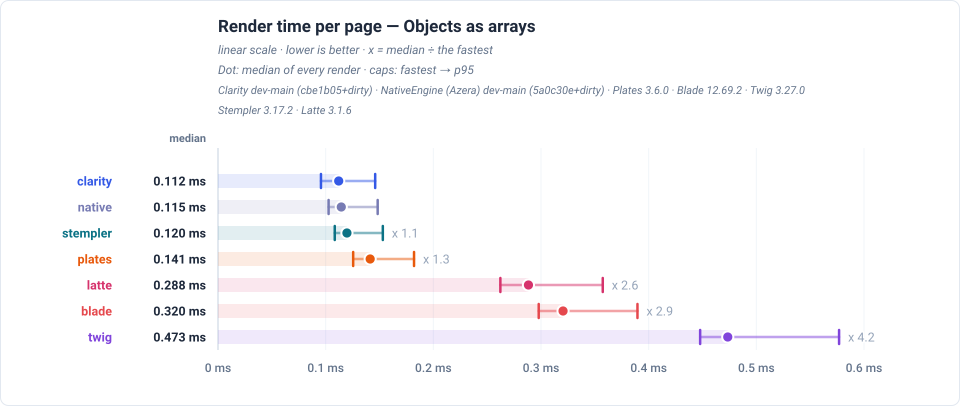
Dot: median render · caps: fastest observation and p95.
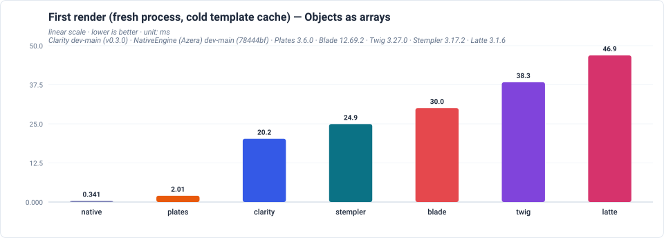
The one-off cost of the first request after a deploy: engine boot, template compile, cache write and one render. Measured once per engine, each in its own fresh process; OPcache is on but its CLI segment is per-process, so the engine source is compiled there too.
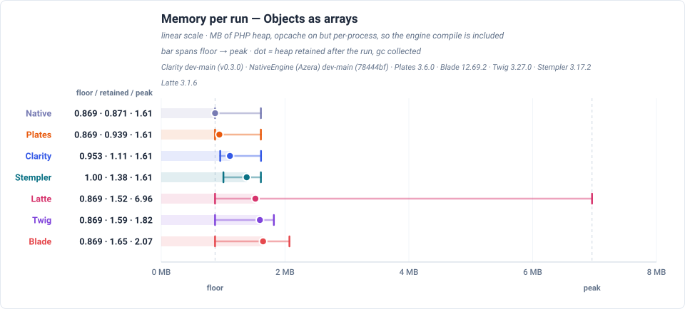
Reads the PHP heap. Left cap: what the engine costs to have loaded, nothing rendered. Dot: what a whole run still holds, after a gc pass — memory_get_usage(false) after a whole run of iterations_per_run renders in a fresh process, gc_collect_cycles() called first. Right cap: the run's high-water mark. Memory probe: a fresh process with opcache.enable_cli=1 but a per-process CLI segment, so engine source is compiled in that process.
Results
| Engine | First render (ms) | Mean (ms) | Median (ms) | Min (ms) | p95 (ms) | Retained (MB) | Peak (MB) |
|---|---|---|---|---|---|---|---|
| Clarity | 15.971 | 0.119 | 0.112 | 0.096 | 0.146 | 1.11 | 1.61 |
| Native | 0.321 | 0.121 | 0.115 | 0.103 | 0.148 | 0.87 | 1.61 |
| Stempler | 22.801 | 0.126 | 0.120 | 0.108 | 0.153 | 1.38 | 1.61 |
| Plates | 2.059 | 0.150 | 0.141 | 0.126 | 0.182 | 0.94 | 1.61 |
| Latte | 47.737 | 0.302 | 0.288 | 0.262 | 0.357 | 1.52 | 6.96 |
| Blade | 29.716 | 0.331 | 0.320 | 0.298 | 0.390 | 1.65 | 2.07 |
| Twig | 34.921 | 0.492 | 0.473 | 0.448 | 0.577 | 1.59 | 1.82 |